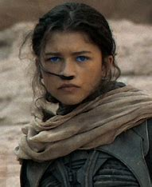

Casts

Timothée Chalamet

paul atreidese
Mini-biography
Chalamet (born December 27, 1995) is an American actor and producer. Known for his roles in Call Me by Your Name (2017), Lady Bird (2017) and My Beautiful Boy (2018) Dune 2021 and 2023. In this role, he plays a noble heir and prophet who takes control of Arrakis and becomes a legendary figure, transforming the fate of the universe into an epic of power and destiny.

Rebecca Ferguson

Lady Jessica Atreides
Mini-biography
Rebecca Ferguson (born October 19, 1983) is a Swedish actress and producer. Revealed by her roles in The Greatest Showman (2017), Mission: Impossible - Rogue Nation (2015), Dune: Part One (2021) and Dune: Part Two (2023), she plays Lady Jessica in the adaptation of Dune. In this role, she plays a member of the Bene Gesserit and the mother of Paul Atreides.

Oscar Isaac

Duke Leto Atreides
Mini-biography
Oscar Isaac born March 9, 1979 in Guatemala City is a Guatemalan actor and producer. Known for his roles in Ex Machina (2014), A Most Violent Year (2014), Star Wars (trilogy 2015-2019) and Moon Knight (2022), he plays Duke Leto Atreides in Dune (2021). In this role, he plays the father of Paul Atreides, a noble and righteous ruler.
Zendaya

Chani
Mini-biography
Zendaya, born September 1, 1996 in California, is an actress and producer. She is known for her roles in Spider-Man: Homecoming (2017), The Greatest Showman (2017), and Malcolm & Marie (2021). In the adaptation of Dune (2021 and 2023), she plays Chani, a Fremen who becomes the ally and love of Paul Atreides

Jason Momoa

Duncan Idaho
Mini-biography
Jason Momoa (born August 1, 1979) is a senior actor and producer. He is known for his roles in Aquaman (2018), Aquaman and the Lost Kingdom (2023), Game of Thrones (2011-2012) and The Bad Batch (2016). In Dune (2021 and 2023), he plays Duncan Idaho, a loyal warrior and close friend of Paul Atreides.

Stellan Skarsgård

Baron Harkonnen
Mini-biography
Stellan Skarsgård was born in Gothenburg, Västra Götaland County, Sweden. An actor and producer, he is known for his roles in Will Hunting (1997), Nymphomaniac: Volume 1 (2013) and Amistad (1997), Dune (2021 and 2023), he plays Baron Vladimir Harkonnen, the main antagonist, a cruel lord

Josh Brolin

Gurney Halleck
Mini-biography
Josh Brolin was born on February 12, 1968, in California, United States. An actor and producer, he is known for his roles in Avengers: Infinity War (2018) and Avengers: Endgame (2019). In Dune (2021 and 2023), he plays the fencing master and mentor of Paul Atreides.